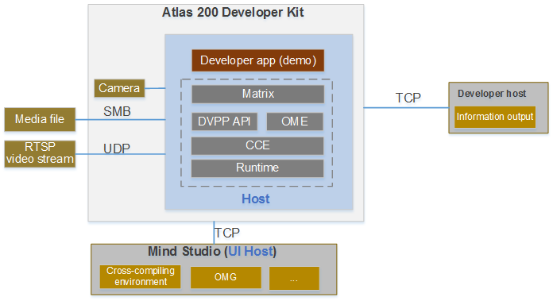
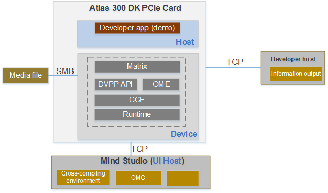

Overview
This document describes the principles and usage of Atlas developer kit （DK） applications.
Figure 1 shows the working principles of an Atlas 200 DK application.
Figure 1 Block diagram of application running based on the Altas 200 DK

Figure 2 shows the principle of application running based on the AI acceleration cloud server.
Figure 2 Block diagram of application running based on the AI acceleration cloud server

- In the Atlas 200 DK, the Ascend 310 AI processor and its connected ARM server are jointly deployed, which is called the "Host".
- In the AI acceleration cloud server, the "Device" refers to the hardware device where the Ascend 310 AI processor is located, and "Host" refers to the x86 server connected to the device. The host uses the NN computing capability provided by the device to implement service functions.
- The server where Mind Studio is located is called the "UI Host".